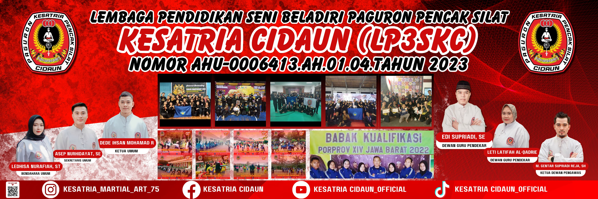
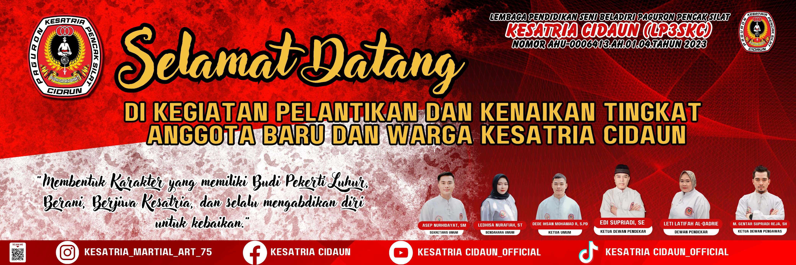
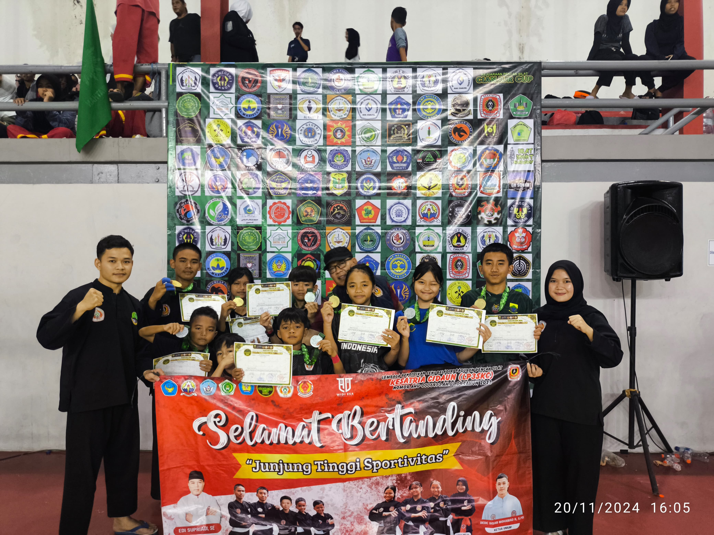

Beranda
Tentang Kami ▾
Sejarah
Visi & Misi
Pengurus Pusat
Lambang
Berita
Informasi ▾
Prestasi
Album Photo
Album Video
Hubungi Kami


❮
❯
Berita Terbaru
Berita
Kejurda Pelajar III Pra Remaja Kabupaten Cianjur
Admin
|
01 Sep 2024
Berita
Cianjur Open Championship 3 di Gedung Pramuka Cianjur
Admin
|
01 Sep 2024
Artikel
Mengenal Lebih Dalam Tentang PPS Kesatria Cidaun
Dede Ihsan
|
01 Sep 2024

Berita
Cianjur Open Championship 4 di Gor Cianjur
Admin
|
01 Sep 2024
Berita
Penataran Peraturan Baru Pencak Silat Jawa Barat
Admin
|
01 Sep 2024
Berita
Pelantikan Anggota Baru dan Kenaikan Sabuk Hijau
Admin
|
01 Sep 2024